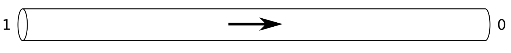
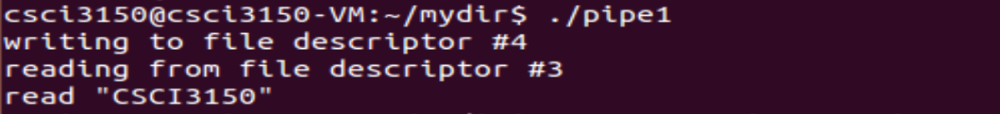

Pipe
 Pipe connect programs like garden hose. Anything can be written at the write end, and read from the read end in the order it came in. Pipe is unidirectional(A1).
In pipe1.c, you can see how to create, write to, and read from a pipe.
/* pipe1.c */
#include <stdio.h>
#include <stdlib.h>
#include <unistd.h>
int main(int argc, char* argv[])
{
int pipefds[2];
char buf[30];
//create pipe
if (pipe(pipefds) == -1) {
perror("pipe");
exit(EXIT_FAILURE);
}
//write to pipe
printf("writing to file descriptor #%d\n", pipefds[1]);
write(pipefds[1], "CSCI3150", 9);
//read from pipe
printf("reading from file descriptor #%d\n", pipefds[0]);
read(pipefds[0], buf, 9);
printf("read \"%s\"\n", buf);
return 0;
}

Analysis -- As you can see, pipe() takes an array of two ints as an argument. pipe() fills in that array with two file descriptors. The first element of the array is the reading-end of the pipe, the second is the writing end (A5). When any bytes are written to pipefds[1],the operating system makes them available for reading from pipefds[0].
On success, pipe() will return 0, otherwise return -1 (A6).